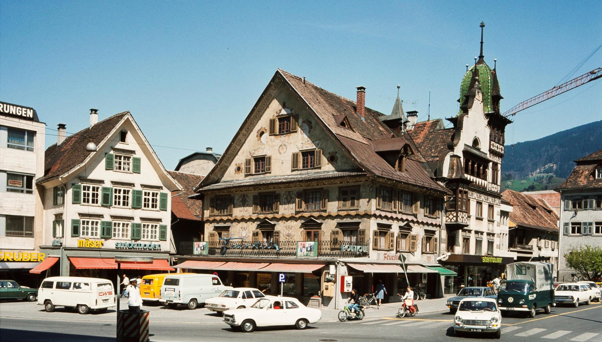
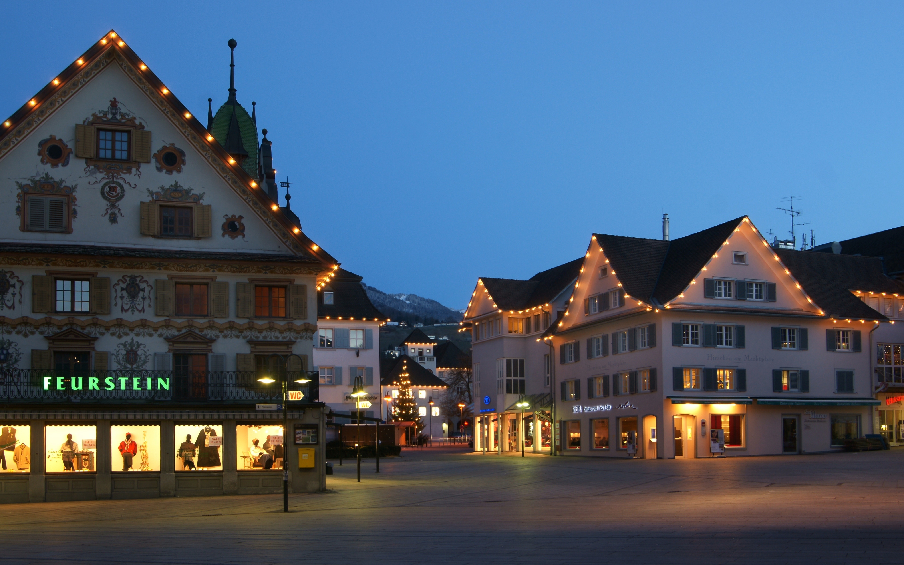
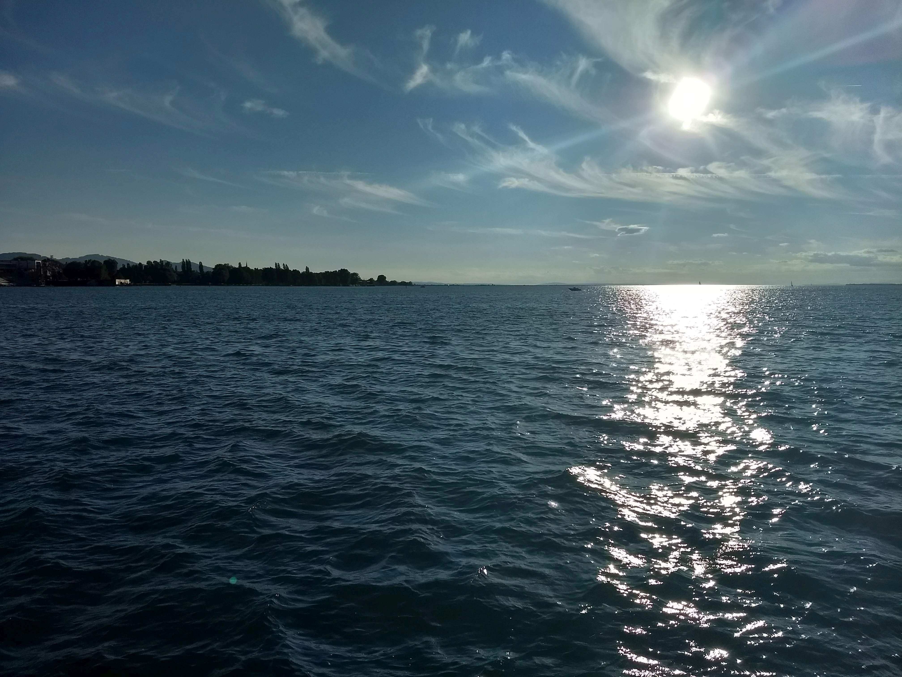
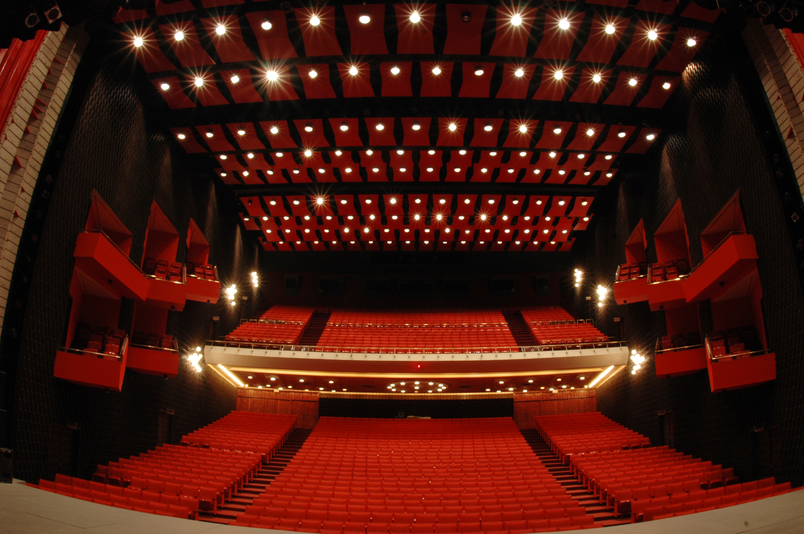
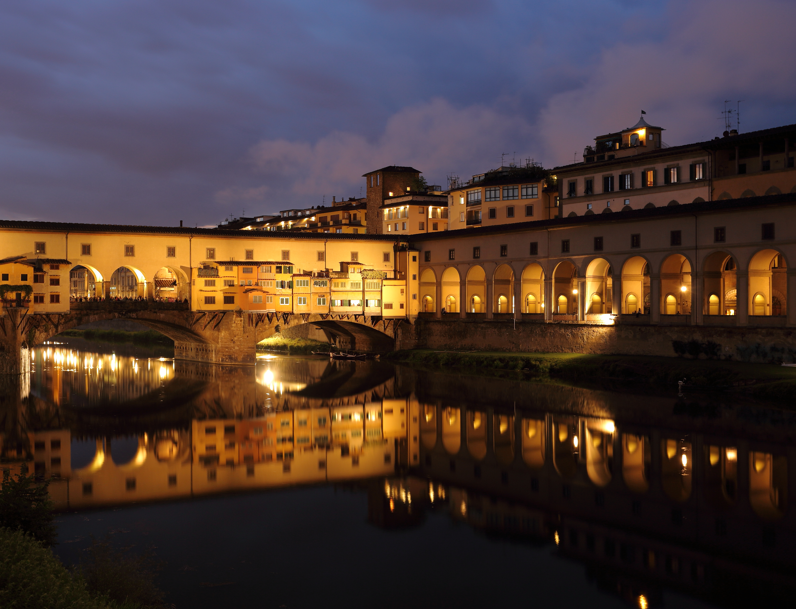
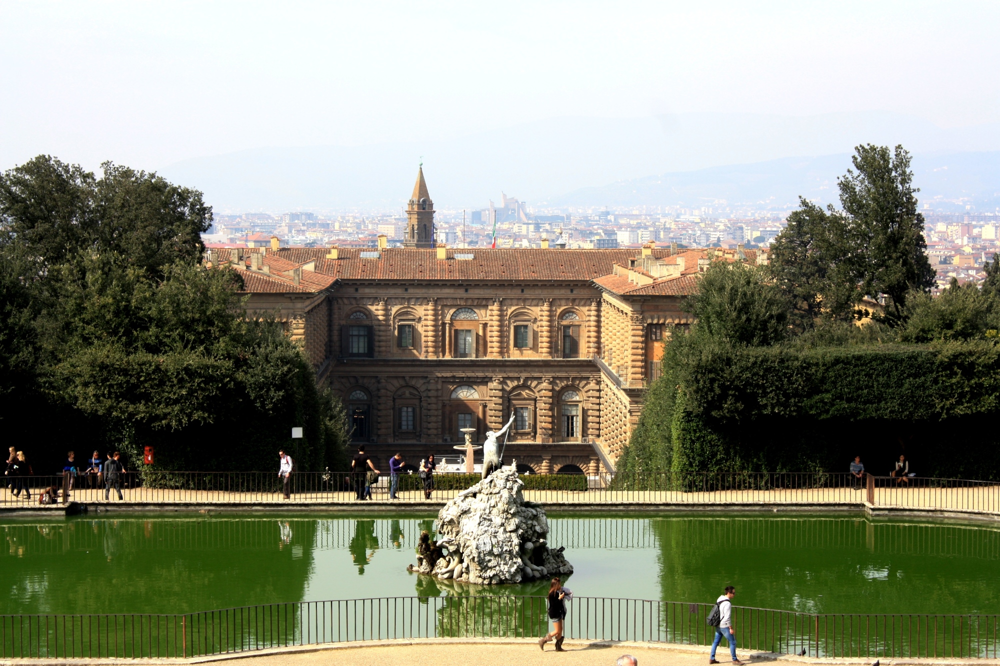
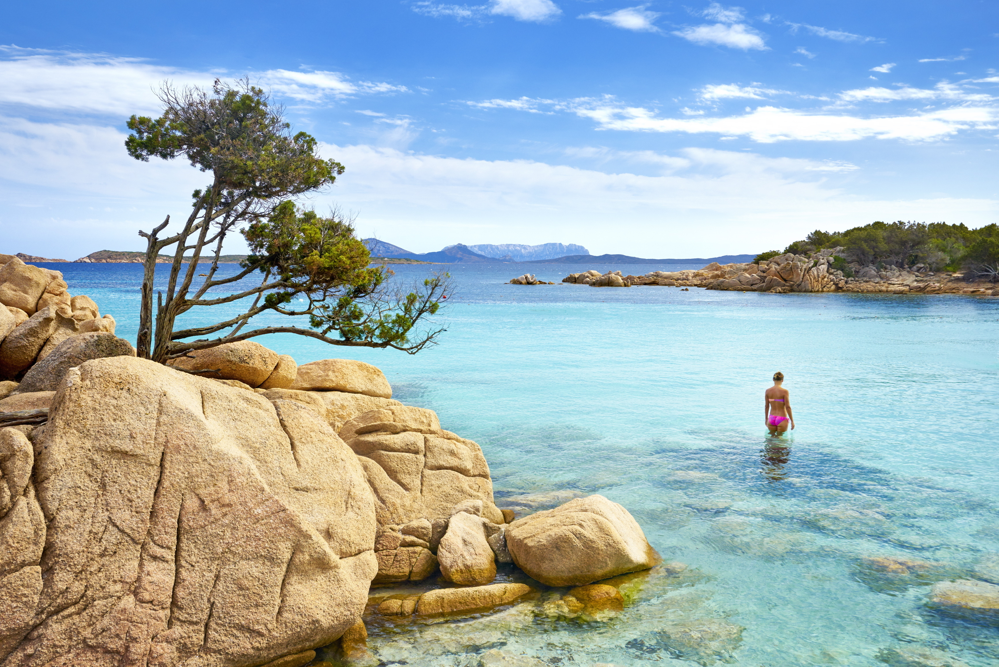
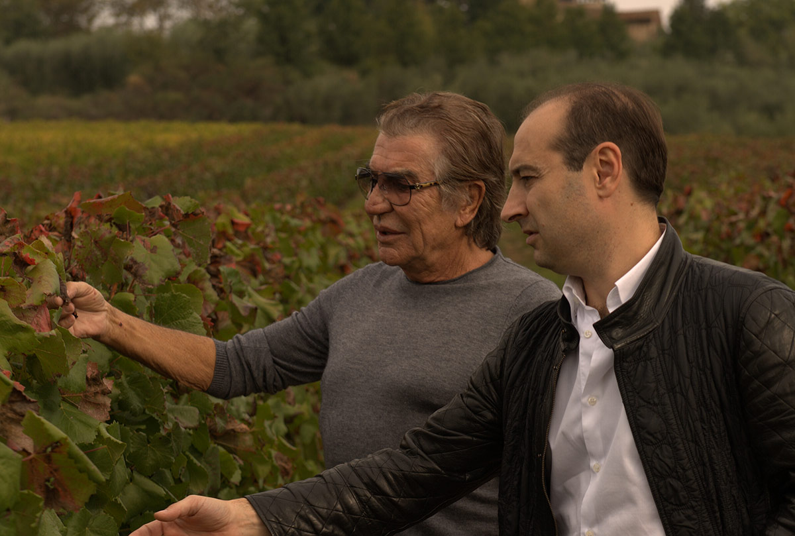

L01 · Marktplatz Dornbirn 1975 01.jpg

2910 × 1654 · Shots S01
Vorarlberger Landesarchiv / Helmut Klapper · CC BY 4.0
Source identifies 1975 Dornbirn; period street reference, not Eva’s house.
Open full imageSource & rightsDrop images here or click to choose · up to 20 MB each
L02 · Marktplatz Dornbirn.JPG

4065 × 2542 · Shots S01
böhringer friedrich · CC BY-SA 2.5
Location / atmosphere reference. Capture date does not establish film-era appearance. Not proof Eva visited this exact spot.
Open full imageSource & rightsDrop images here or click to choose · up to 20 MB each
L03 · 20180625 19 Bregenz - Bodensee (29177022348).jpg

4032 × 3024 · Shots S01, S18
Sjaak Kempe from Groningen, The Netherlands · CC BY 2.0
Location / atmosphere reference. Capture date does not establish film-era appearance. Not proof Eva visited this exact spot.
Open full imageSource & rightsDrop images here or click to choose · up to 20 MB each
L04 · Sala Carlos Piantini.JPG

4008 × 2665 · Shots S02, S03
Felix714 · CC BY-SA 4.0
Present-day auditorium layout reference; do not assume the seats, lights or fittings match 1977.
Open full imageSource & rightsDrop images here or click to choose · up to 20 MB each
L05 · Ponte Vecchio at dusk 1.JPG

4948 × 3786 · Shots S04, S17
Martin Falbisoner · CC BY-SA 3.0
Location / atmosphere reference. Capture date does not establish film-era appearance. Not proof Eva visited this exact spot.
Open full imageSource & rightsDrop images here or click to choose · up to 20 MB each
L07 · Boboli Gardens

2000 × 1332 · Shots S04, S18
Not stated · Copyright retained by source; no reuse licence acquired
Public Boboli Gardens: garden/architecture inspiration, not Cavalli family home.
Open full imageSource & rightsDrop images here or click to choose · up to 20 MB each
L08 · Capriccioli beach

6928 × 4626 · Shots S07, S08, S18
John Walker / Shutterstock via SardegnaTurismo · Copyright retained by source; no reuse licence acquired
Location / atmosphere reference. Capture date does not establish film-era appearance. Not proof Eva visited this exact spot.
Open full imageSource & rightsDrop images here or click to choose · up to 20 MB each
L10 · Tenuta degli Dei vineyard context with Roberto and Tommaso

1200 × 809 · Shots S05, S08, S18
Tenuta degli Dei; photographer not stated · Copyright retained by source; no reuse licence acquired
Estate context image with people retained; do not use the men as anonymous characters or identity references for Eva.
Open full imageSource & rightsDrop images here or click to choose · up to 20 MB each
L11 · Tenuta degli Dei wine cellar with Tommaso

1200 × 799 · Shots S09
Tenuta degli Dei; photographer not stated · Copyright retained by source; no reuse licence acquired
Estate context image with people retained; do not use the men as anonymous characters or identity references for Eva.
Open full imageSource & rightsDrop images here or click to choose · up to 20 MB each